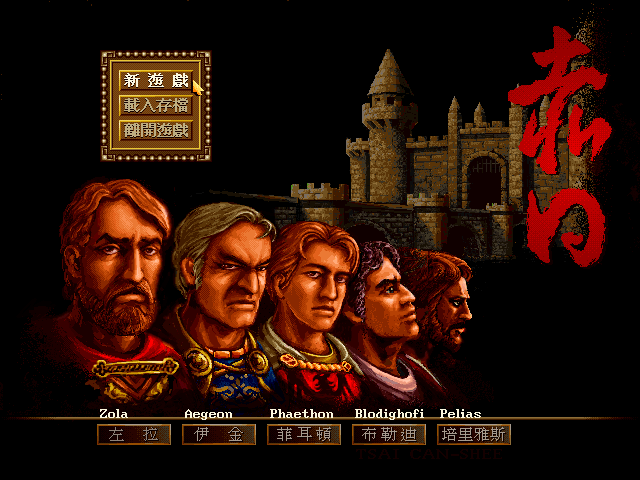
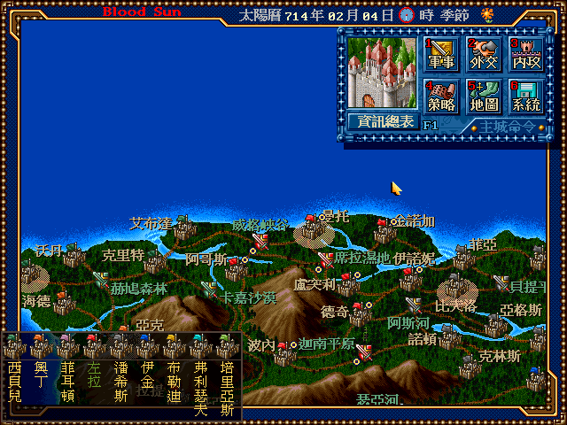

名稱：赤日 (Blood Sun，中文版) 簡介：世紀縱橫1996年出品的即時策略遊戲 [待補]。

保護：光碟，破解碼： SETUP.EXE E8 D7 2E 02 00 A2 BA B4 19 CD 21 90 -- -- SUN.EXE (破解後無動畫) E8 A8 14 00 00 E8 90 90 90 90 90 90 -- -- E8 05 88 02 00 A2 FC 或 (以下破解不完全，仍需光碟裡的動畫檔) B4 19 CD 21 90 -- -- 60 C7 05 70 A1 02 00 00 00 00 00 B8 00 11 00 00 -- -- -- -- -- -- -- 45 -- -- -- -- -- -- -- -- 備註：DosBox若出現"remove share.exe"訊息無法安裝，請更換其他版本DosBox試試（0.74 或SVN版可以）。 備註：電腦速度不可太快，否則遊戲速度會過快，操控會來不及。